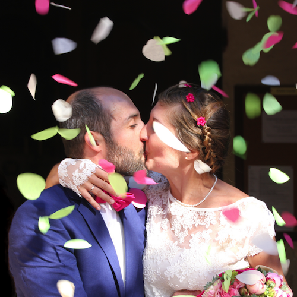

le vendredi 13 septembre 2013 à Saint-Chamas
Un immense merci à tous pour nous avoir accompagnés par votre présence, vos pensées et nombreuses attentions. Nous garderons à jamais un souvenir ému et festif de ces journées.
devant
15h, mairie
de
Saint-Chamas,
16h, église
St-Léger de Saint-Chamas,
au domaine de Sulauze à Miramas.